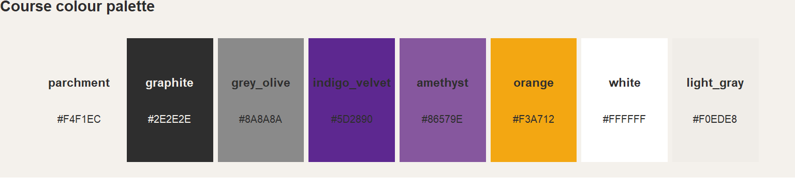
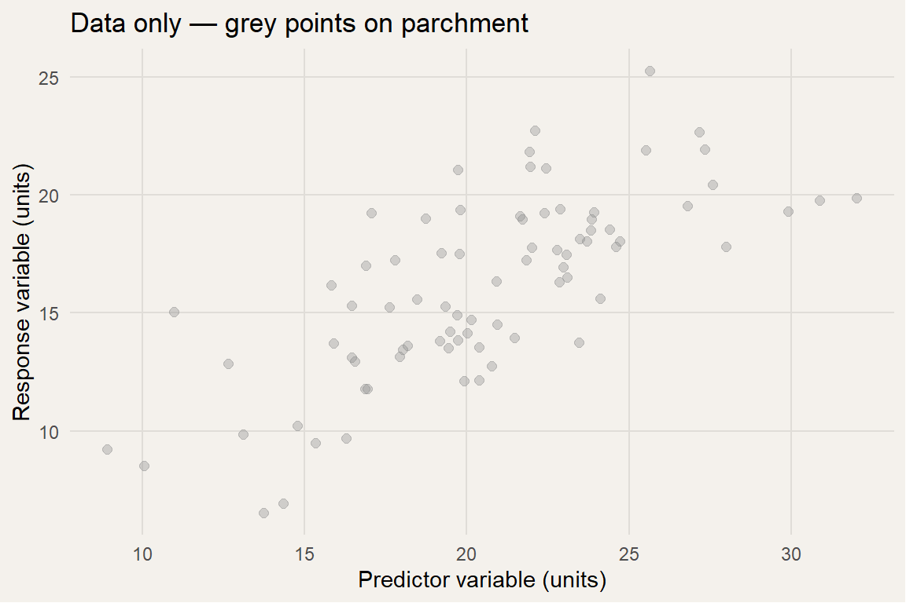
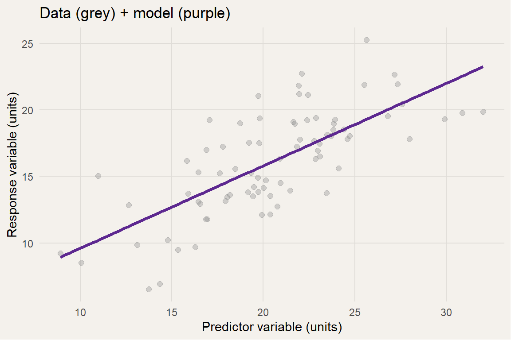

Visual Identity Guide — Biostatistika (MB120P163)
Colour, typography, and figure conventions for all course materials
1 Purpose
This document defines the visual identity system for the course Biostatistika (MB120P163) at the Faculty of Science, Charles University.
The goal is to ensure:
- conceptual clarity (data vs model vs interpretation)
- visual consistency across all outputs
- low cognitive load for students
1.1 Language requirement
All student-facing content — axis labels, callout headings, interaction prompts, figure captions, slide text, and annotations — must be in Czech. This is a hard requirement, not a preference. The only exceptions are:
- R function names, package names, and error messages (remain in English)
- Internal technical documentation and README files (English — read by collaborators, not students)
- Inline R code spans and code blocks
2 Core Design Philosophy
The visual system encodes epistemic roles:
- Data (observations) → neutral, grey
- Model (inference) → purple
- Interpretation / emphasis → orange
Colour is not decorative. It conveys meaning.
2.1 Connection to the pedagogical sequence
The colour order mirrors the course’s canonical teaching sequence:
| Step | What happens | Colour |
|---|---|---|
| 1 | Biological question is posed | — (no data yet) |
| 2 | Data are shown | grey |
| 3 | Students predict / interpret | — (question slide) |
| 4 | Statistical result is revealed | purple |
| 5 | Result is interpreted biologically | orange |
A figure that uses these colours in the correct semantic roles therefore mirrors the analytical workflow students are being trained to follow. This is the primary justification for treating colour as meaning rather than decoration.
3 Colour Palette
The canonical palette is defined in quarto/colors.json. Every lecture repo downloads this file at render time.
3.1 Base colours
parchment(#F4F1EC) — backgroundgraphite(#2E2E2E) — primary text
3.2 Neutral / Data layer
grey_olive(#8A8A8A) — data points, gridlines
3.3 Model layer (primary accent)
indigo_velvet(#5D2890) — main modelamethyst(#86579E) — secondary model / comparison
3.4 Highlight layer
orange(#F3A712) — emphasis, key results
3.5 Live colour swatches
4 Semantic Mapping (MANDATORY)
| Role | Colour name | Hex value | Usage |
|---|---|---|---|
| Data | grey_olive |
#8A8A8A | raw observations, background structure |
| Model (primary) | indigo_velvet |
#5D2890 | main fitted curve, main inference |
| Model (secondary) | amethyst |
#86579E | alternative models, comparisons |
| Highlight | orange |
#F3A712 | key insight, important value, warning |
Rules:
- Grey is always data
- Purple family is always modelling
- Orange is used sparingly for emphasis
5 Usage Rules
5.1 General
- Use maximum 3 colours per figure
- Maintain strong contrast hierarchy
- Prefer restraint over expressiveness
5.2 Data (points)
- Colour:
grey_olive - Alpha: 0.2–0.4
- Size: small
5.3 Models (lines)
- Primary model:
indigo_velvet - Secondary model:
amethyst - Line width: slightly thicker than default
5.4 Highlights
Use orange only for:
- key datapoints
- annotated regions
- important labels
Do NOT:
- colour entire plots orange
- use orange for decorative purposes
5.5 Uncertainty
- Use transparency of purple (
alpha = 0.15) - Or lighter amethyst
- Avoid introducing new colours
6 Typography
Font definitions are in quarto/fonts.json.
6.1 Primary (sans-serif)
- Body: Inter (weights 400, 500, 700)
- Headings: Source Sans 3 (weights 400, 600, 700)
6.2 Monospace
- JetBrains Mono; fallback: Fira Code
Usage:
- Monospace for code, formulas, filenames
- Optional: purple accent (
indigo_velvet) for model formulas
7 Layout Principles
- Left-aligned layouts
- Generous whitespace
- One main visual per slide
Optional structural motif:
- Thin vertical purple line for consistent framing
8 Figure Design Pattern
Standard layer order:
- Grey points (data)
- Purple curve (model)
- Optional secondary curve (amethyst)
- Orange highlight (if needed)
This order reflects the analytical workflow (§2.1).
8.1 Biological framing requirement
Every figure in a student-facing context must be anchored in a concrete biological or ecological question.
Required:
- Caption or slide narrative states the biological question the figure addresses (e.g. “Závisí délka křídla na druhu tučňáka?”)
- Axis labels use ecologically meaningful Czech names with units — never raw column names
- Annotations (if orange) explain the biological significance, not just the statistical value
A figure is complete only when a student could answer “what biological question does this address?” from the figure and its caption alone.
9 ggplot2 Implementation
9.1 Named colour constants
Define these at the top of every setup chunk and reuse throughout:
clr_data <- "#8A8A8A" # grey_olive — raw observations
clr_model <- "#5D2890" # indigo_velvet — primary model
clr_model2 <- "#86579E" # amethyst — secondary model / comparison
clr_highlight <- "#F3A712" # orange — emphasis / key result
clr_bg <- "#F4F1EC" # parchment — plot background9.2 Standard course ggplot2 theme (theme_biostat)
Every figure must end with + theme_biostat(). Define this function once in each lecture’s R/set_r_theme.R (generated automatically by R/generate_theme.R).
Reference implementation:
theme_biostat <- function() {
ggplot2::theme_minimal(base_family = "Source Sans 3") +
ggplot2::theme(
plot.background = ggplot2::element_rect(fill = "#F4F1EC", colour = NA),
panel.background = ggplot2::element_rect(fill = "#F4F1EC", colour = NA),
panel.grid.major = ggplot2::element_line(colour = "#E0DDD8"),
panel.grid.minor = ggplot2::element_blank(),
axis.text = ggplot2::element_text(colour = "#2E2E2E"),
axis.title = ggplot2::element_text(colour = "#2E2E2E"),
plot.title = ggplot2::element_text(colour = "#2E2E2E", face = "bold"),
legend.background = ggplot2::element_rect(fill = "#F4F1EC", colour = NA)
)
}Example: scatter plot (data only)
# Synthetic data for illustration
set.seed(1)
n <- 80
example_df <-
tibble::tibble(
x = rnorm(n, mean = 20, sd = 5),
y = 0.8 * x + rnorm(n, sd = 3)
)
ggplot2::ggplot(
example_df,
ggplot2::aes(x = x, y = y)
) +
ggplot2::geom_point(
colour = clr_data,
alpha = 0.35,
size = 2
) +
ggplot2::labs(
x = "Predictor variable (units)",
y = "Response variable (units)",
title = "Data only — grey points on parchment"
) +
ggplot2::theme_minimal(base_family = "sans") +
ggplot2::theme(
plot.background = ggplot2::element_rect(fill = clr_bg, colour = NA),
panel.background = ggplot2::element_rect(fill = clr_bg, colour = NA),
panel.grid.major = ggplot2::element_line(colour = "#E0DDD8"),
panel.grid.minor = ggplot2::element_blank()
)
Example: scatter + fitted model
ggplot2::ggplot(
example_df,
ggplot2::aes(x = x, y = y)
) +
ggplot2::geom_point(
colour = clr_data,
alpha = 0.35,
size = 2
) +
ggplot2::geom_smooth(
method = "lm",
colour = clr_model,
linewidth = 1.2,
se = FALSE,
formula = y ~ x
) +
ggplot2::labs(
x = "Predictor variable (units)",
y = "Response variable (units)",
title = "Data (grey) + model (purple)"
) +
ggplot2::theme_minimal(base_family = "sans") +
ggplot2::theme(
plot.background = ggplot2::element_rect(fill = clr_bg, colour = NA),
panel.background = ggplot2::element_rect(fill = clr_bg, colour = NA),
panel.grid.major = ggplot2::element_line(colour = "#E0DDD8"),
panel.grid.minor = ggplot2::element_blank()
)
10 Consistency Rules
- Do not reassign colour meanings
- Do not introduce new hues without justification
- Maintain consistency across lectures and materials
11 Guiding Principle
Colour encodes epistemic status, not category.
- grey → observed
- purple → modelled
- orange → interpreted
12 Default Decision Rules
Use the following defaults unless there is a strong reason to deviate:
- Map data to grey (
grey_olive) - Map the primary model to
indigo_velvet - Use
amethystonly for secondary comparison - Use
orangeonly for deliberate emphasis - Limit each figure to the smallest viable palette
- Prefer minimalism, consistency, and semantic clarity
Safe default (for most figures): grey points + purple model + no accent colour.
13 Future Extensions
Possible controlled extensions:
- line types for additional models (instead of adding colours)
- transparency gradients for density
- annotations instead of additional colours
Avoid expanding the palette unless strictly necessary.
14 Presentations (Quarto RevealJS)
14.1 Slide background and theme
- Background colour:
parchment(#F4F1EC) - Primary text:
graphite(#2E2E2E) - Code highlight style:
github-light(consistent with parchment background)
14.2 Typography on slides
- Headings: Source Sans 3 or Inter, bold
- Body: same sans-serif family at regular weight
- Code: JetBrains Mono or Fira Code
- Do NOT use more than one heading weight per slide
14.3 Colour use in slide text and callouts
- Use
indigo_velvetfor highlighted model formulas or key statistical terms — apply sparingly - Use
orangefor “question” labels, key-result callout borders, or “important” boxes - Do NOT colour regular prose text for decoration
- Callout with left purple border = supplementary explanation; orange border = call to attention
14.4 Figure density
- One figure per slide is the default
- Two-column layout is allowed for: side-by-side model comparisons, before/after reveals, data vs model overlays
- Never place more than two distinct figures on a single slide
14.5 Progressive disclosure
- Reveal layers in this order: data (grey) → model (purple) → interpretation (orange callout)
- Use RevealJS fragments or incremental list options
- Never show a model result before posing a prediction question to the audience
14.6 Interaction slides
- Mark interaction slides with a thick
indigo_velvetleft border or a distinct callout block - The word “Otázka” or “Diskuze” can be accented in
orange - Keep ALL interaction slides visually consistent within a single lecture
14.7 Code display on slides
- Keep visible code chunks to ≤ 8 lines; scrolling is acceptable for demos
- Code output inherits the parchment background — do not override with white or grey
- Student-visible code uses base R only (no tidyverse prefixes)
15 Skripta (Learning Materials — Quarto HTML / Typst PDF)
15.1 HTML theme
- Base Quarto theme:
flatly+ customskripta_theme.scss(generated from JSON) - TOC: always shown (
toc: true,toc-depth: 3), left sidebar in HTML - Section numbering: always enabled (
number-sections: true)
15.2 Callout blocks
Use Quarto callouts for exactly three purposes:
| Callout type | Purpose | Accent colour |
|---|---|---|
note |
Supplementary explanation, extra detail | indigo_velvet (SCSS customised) |
important |
Key concept or definition the student must retain | indigo_velvet |
warning |
Common mistake or statistical misconception | orange |
Avoid tip and caution to limit visual variety. Do not invent new callout types.
15.3 Colour in prose
- Do not colour prose text
- Bold is the only allowed inline emphasis for key terms appearing for the first time
- Italic is reserved for species names and foreign-language terms — not for general emphasis
- Code inline spans are used for all R objects, function names, variable names, and file paths
15.4 Figures in skripta
- Semantic colour mapping applies identically to skripta figures
- Every figure requires a caption that interprets the figure — not just describes it
- Default width:
out.width = "80%"for HTML;out.width = "100%"for Typst/PDF - Always include
fig-altalt text for accessibility
15.5 Code blocks
- Student-visible chunks (
echo: true): base R, no prefixes for preloaded packages - Hidden setup chunks (
echo: false): tidyverse with full namespace (pkg::fn()) - Code folding is acceptable only for lengthy raw data preparation
16 R Visualisations — Extended Reference
16.1 Model uncertainty bands
Show uncertainty via transparent fill using the model colour — do NOT introduce a new colour:
ggplot2::geom_ribbon(
ggplot2::aes(ymin = lower, ymax = upper),
fill = clr_model,
alpha = 0.15
)16.2 Two-model comparison
Use a thinner, dashed line for the secondary model to reinforce the visual hierarchy:
# Primary model
ggplot2::geom_smooth(colour = clr_model, linewidth = 1.2, se = FALSE)
# Secondary model
ggplot2::geom_smooth(colour = clr_model2, linewidth = 1.0, se = FALSE, linetype = "dashed")16.3 Boxplots and violin plots
Data points underneath a transparent model-coloured box:
ggplot2::geom_jitter(colour = clr_data, alpha = 0.3, width = 0.15, size = 1.5) +
ggplot2::geom_boxplot(colour = clr_model, fill = NA, linewidth = 0.8, outlier.shape = NA)16.4 Categorical group colour
When colour must encode a grouping variable (e.g. species, treatment):
- Use a distinct palette that does NOT overlap with the semantic palette
- Never reuse
clr_modelorclr_highlightas a group colour - Document the override with a comment
- Suggested accessible palette for up to 4 groups:
clr_skupiny <- c(
"skupina_A" = "#4E9A8A", # teal
"skupina_B" = "#C2613A", # terracotta
"skupina_C" = "#2E6CA4", # steel blue
"skupina_D" = "#7D7D7D" # dark grey
)16.5 Highlights and annotations
# Highlighted individual point
ggplot2::geom_point(
data = data_highlighted,
colour = clr_highlight,
size = 4
)
# Annotation label
ggplot2::annotate(
geom = "text",
x = x_pos,
y = y_pos,
label = "Klíčový výsledek",
colour = clr_highlight,
fontface = "bold",
size = 4
)16.6 Figure dimensions by output context
| Context | fig.width |
fig.height |
out.width |
|---|---|---|---|
| Presentation slide | 7 | 5 | "100%" |
| Skripta HTML | 7 | 5 | "80%" |
| Skripta PDF (Typst) | 6 | 4 | "100%" |
16.7 Axis labels and Czech language
- Always use Czech axis labels in student-visible plots; set with
ggplot2::labs() - Never leave default English column-name axis labels in student-facing output
- Include units in parentheses where relevant:
"Délka křídla (mm)" - Annotation text passed to
ggplot2::annotate()must be Czech - Legend labels and guide titles must be Czech
See §1.1 for the global Czech language requirement.
17 GitHub / Repository Identity
17.1 README files
- Language: English (technical documentation is public-facing)
- Content: state what the repo contains, how to render locally, and who the audience is
- Keep concise; do not include personal context or course history
17.2 Organisation profile (.github repo)
- The
README.mdin the.githubrepo is the public face of the organisation - Colour references should use hex values where relevant
- Tone: informative and neutral
17.3 Release assets and file naming
- Rendered outputs use predictable, fixed names:
presentation.html,skripta.html,skripta_raw.pdf - File names must not contain spaces or special characters (including Czech diacritics)
- Do not change naming conventions without updating the corresponding GitHub Actions workflow